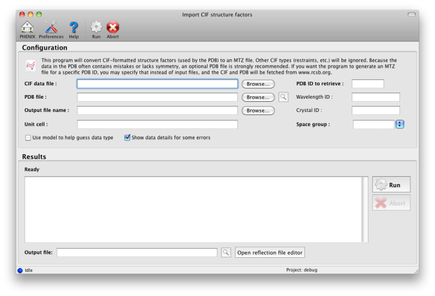

Unlike most other reflection formats, the CIF files used by the PDB to store experimental data are not supported for direct input to PHENIX. phenix.cif_as_mtz is a simple utility for importing these files, and can automatically identify and fix several errors common in the PDB, such as incorrectly labeled intensities in place of amplitudes. Unfortunately, many structures fail to parse properly, so this tool is not guaranteed to work in all cases.
Open the main GUI and click "Import CIF structure factors" under the "Reflection tools" category. Only the CIF file is required, but a PDB file will often be necessary to obtain the correct symmetry information. Click "Use model to guess data type" if you want PHENIX to do a sanity check on the labeled amplitudes (which may not really be amplitudes!).

If you know the PDB ID but haven't downloaded the necessary files yet, you can simply enter the ID into the box in the upper right corner and click "Run", and the PDB and CIF files will be fetched automatically from the RCSB web server.
The output of phenix.cif_as_mtz without arguments is show below:
Usage: phenix.cif_as_mtz [reflection_cif_file] [options]
Options:
-h, --help show this help message and exit
--unit-cell=10,10,20,90,90,120|FILENAME
External unit cell parameters
--space-group=P212121|FILENAME
External space group symbol
--symmetry=FILENAME External file with symmetry information
--output-file-name=OUTPUT_FILE_NAME
Output mtz file name.
--use-model=USE_MODEL
Use PDB model to make better guess about reflection
data type.
--wavelength-id=WAVELENGTH_ID
Extract data set with given wavelength_id.
--crystal-id=CRYSTAL_ID
Extract data set with given crystal_id.
--show-details-if-error
Show data details for some errors.
--show-log Show some output.
--merge Merge non-unique data (preserves anomalous pairs)
--eliminate_sys_absent
Remove systematic absences
--map_to_asu Map HKL indices to canonical asymmetric unit
--incompatible_flags_to_work_set
When merging place reflections with incompatible
flags into the working set.
Example: phenix.cif_as_mtz r1o9ksf.ent --symmetry=pdb1o9k.ent
The --symmetry argument is frequently required due to missing symmetry information; in these cases you should use the equivalent PDB file. Most of the other options are usually not necessary, but --use-model is often helpful to get the data type right.
As a shortcut to download the files from the RCSB (or mirror) website, PHENIX includes a tool for fetching data for a given PDB code:
phenix.fetch_pdb 2hr0 phenix.fetch_pdb -x 2hr0
The argument "-x" specifies that the structure factors should be downloaded instead of the PDB file. (This will only work if the authors deposited their data.)
Assuming that the data were successfully extracted, the program will create an MTZ file with columns FOBS, SIGFOBS (these will be treated as group by most applications in PHENIX), and R-free-flags. In many cases there will be fewer reflections in the output than data lines in the CIF file; this is due to the presence of non-numeric or otherwise unintelligible values.